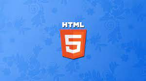
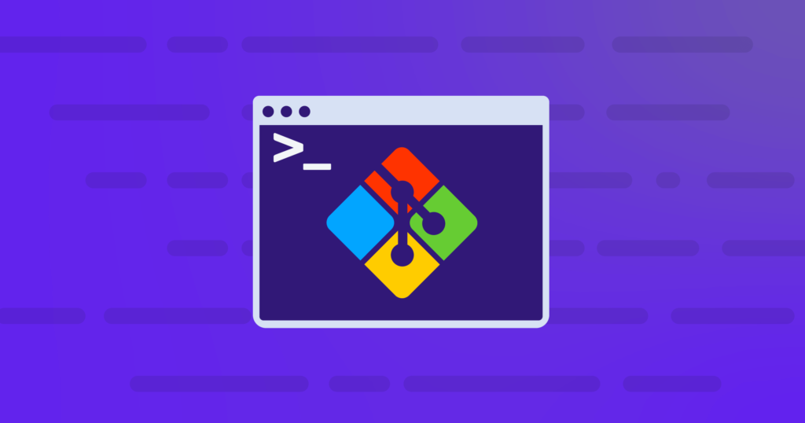
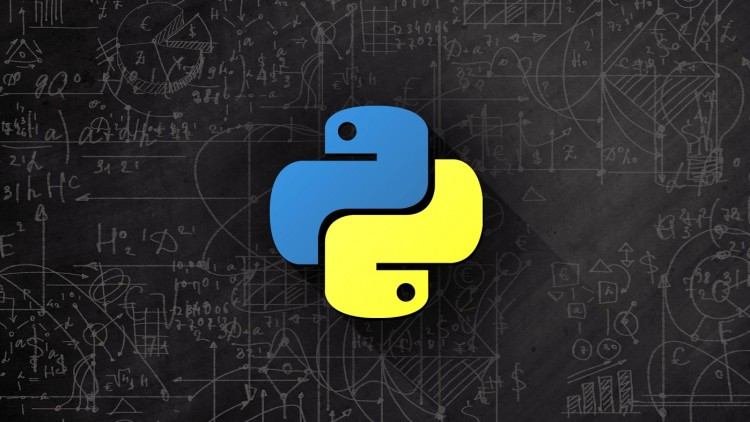

Structure to your web pages
Frenka Diasa
Join the git repository
Alrderd Camder

Join the Community
Adrena Diogot
For so long a time i have had basic understanding of web technologies like Html, CSS and javascript and ever since i have been overwhelmed by it. The moment i figured out how to print "Hello World" i have been intrigued by everything else i in knew that moment, i could actually change the worldith my newly found hobbies you know like do something good by good i mean big. So everyday i would stay up all night and day coding, it became a habit i was overfoundly of, anytime moment i could spare am having screentime and trust me it was all the time. But remember how i talked about doing something "Big" Em i Begin to realize that things were getting small like literally everything from the people i interacted with to where i went to what i did to what i was eating all have been sucked by my screentime(coding) see trust me i am not complaining, i mean i was fulfuilled and happy but i noticed that all the things i did and created where stucked in the spacetime quantinium of my localhost(http://127.0.0.1:5501/) i felt like i was trapped in a box wanting to come so bad but could not, it was like i was alone doing what i did and nobody was seeing or wanted my service. I was trapped with myself. But the aniety and overwhemleness weakened because i was not handling real life project, i was not handling real time scenairo i didn't understand the outside world of tech and how to apply myself into it. And also i wasn't having any return from my effort and all the resources i was using to learn, and i also had to sutain myself. so fast forward to like Right now a friend of my came in contact with zuri.training and refered me to there internship when i read through everything i felt the anxiety and overwhelmness surging through me from the inside out. I was boiling for as much screentime as i can get. So What i would Like to Achieve in 8 weeks well coming into the HNGi8 x I4G work space i have come to relize that i am not actually alone i this game or struggle but there a hell lot of us and it happy to and relate with co-codetts. Before i Digress em the first thing i hope to acheive is
So when i started learn programming i really didn't no what i was getting all i knew was that i loved coding, so i started touching every material to course and e-books i could lay my hands on, you see at first this was fun but it was time consuming and i was going in circle because didn't have a basic deal of how to apply my skill in the field it was needed. But looking at the fact that we have mentor and people who are around and willing at zuri intership program to help out, for me that just soothing. I don't have to learn python today and because i don't have anything to do, go again to learning java or c++ and all the other languages. This can get you confused. But with the help good folks and the team i am assured that this 8 weeks would not be a waste
I had alot of time learning the basic level of python but due to the fact that i could not do anything with it in the real world and i had no one to put me through, i just got tried of listening to my instructs Dr. chuck and Mosh really thing can get boring real quickly. But Just on monday i started a job i don't even know if i could finish it even has a deadline am so happy for that. And this so engaging am anixous, overwhelmed and happy. Thanks zuri hopefully i would participate on even strong change and strech my limit.
I had this setback of getting resource to keep me updated, but with the help of zuri internship i can see a turn around. To get resource on udemy somehow cheap depending if you can wait for the discount but with zuri resources are free that nice and i even have alot of people asking to help out if i get stuck or don't know what to do. I even so some guys looking for study buddies, isnt that amazing. So i could learn and still make friend.
Come to think of it when i saw zuri was connecting or refering intern to people that need their service, i said to my self that i want this yeah. But this thought came like are you that good to reach the final stage, but the this quote i saw when i was younger came to mind immediately "when you shoot for the moon don't be scared if you miss because you can hit the stars" Hope i said that right. So i heard devs make good cash, i just want good cash y'all.
You see with zuri i entered with the most crowded room filled with developers/designers/devops/digital marketers all this folks that like screentime for africa. And alot of them are extending a hand of friendship that really nice. Come to think of it with people you can't predict what you can get, from connects to long-term freinds to collegues and partners you name it. Trust me i was told that this coding thing is not making me socialize. And people say i am an introvert before.
Looking at guys in the tech industries like paystack, telemedinces, facebook and lot of them. They all came to light with one idea that solves alot of problems that people need but don't forget or put aside all those devs and design marketer that are there working their ass off to see that it all come to light. They my not necessarly be the frontlines but they to are important. So in a nutshell all i am saying is that i also want to be part of bring world changing solution to basic problems all around the world. and maybe be as famous as zuck.
Frenka Diasa
Alrderd Camder
Adrena Diogot